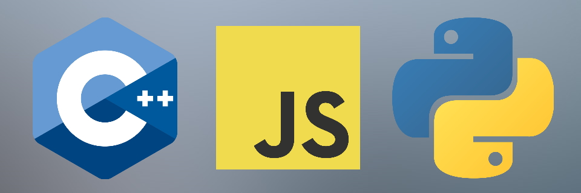
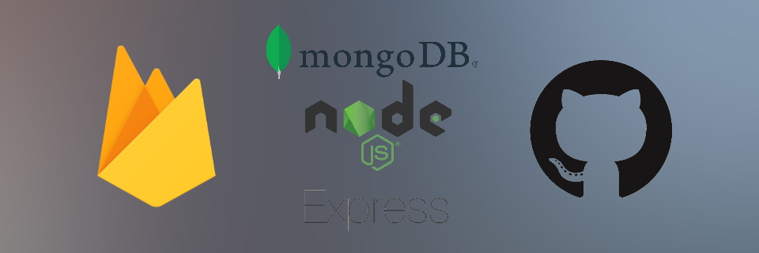

Intro
Hello! My Name is Galen Shirey, and I am a 23 year old Software Developer from south eastern Pennsylvania. I graduated from Kutztown University in May 2020 with a Bachelors of Science in Computer Science: Software Development. I've spent most of my life around computers and technology, whether that be playing video games, building a new PC Rig, or helping a family member figure out a computer problem.
Coursework
Below is a list of noteworthy courses I took while at college:
- CSC 363 - Interdiplicinary Software Rapid Prototyping
- CSC 342 - Web Technologies (JS - MEN Stack)
- CSC 223 - Advanced Scientific Programming (Python)
- CSC 425 - Compiler Design I (C++)
- CSC 237 - Data Structures (C++)
- CSC 354(355) - Software Engineering I & II (JS & SDLC)
- MAT 337 - Intro to Cryptography
Languages & Technologies
 Hobbies
Fishing Gaming Camping Golfing ProgrammingEditing Bacon